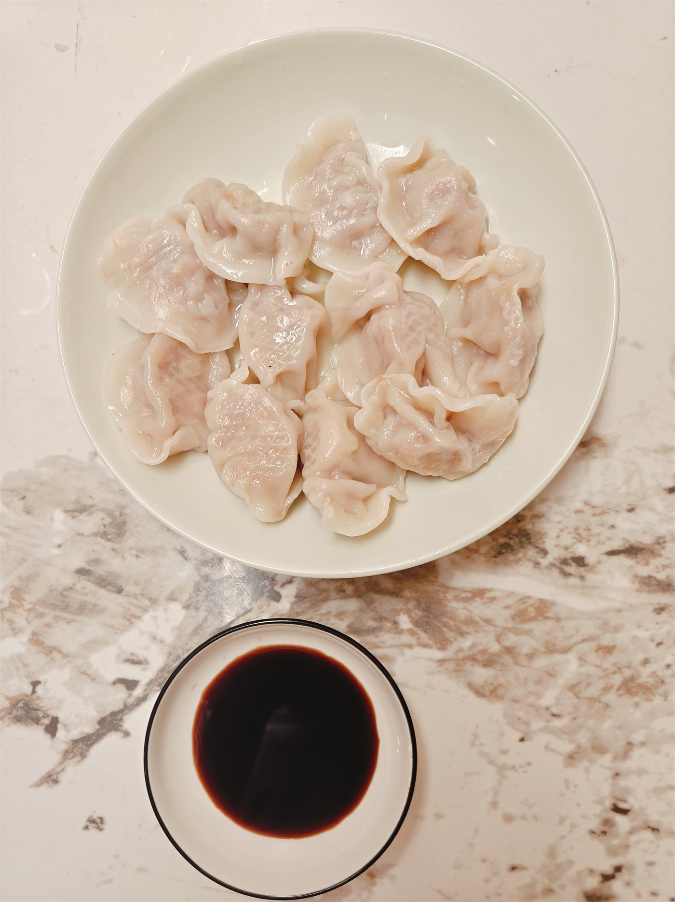
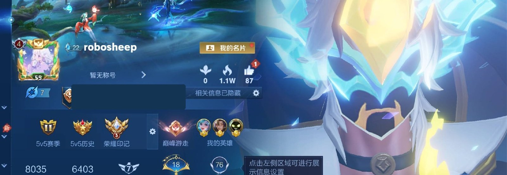

INTERESTS
兴趣爱好
MUSIC
音乐
我习惯在做事时放音乐。它让原本平常的过程多一点节奏，也让生活不至于显得单调。

READING
《午夜图书馆》
人总会想，如果当初作出另一种选择，生活会不会更好。但未走过的路之所以显得美好，常常只是因为我们还没有经历它糟糕的那一面。比起反复设想另一种人生，我更愿意学着享受当下的生活。
COOKING
做饭
对我来说，做饭是一件可以一步步接近理想结果的事。第一次尝试往往并不好吃，但只要一点点调整做法，让下一次比上一次更好，就会获得很具体的成就感。
第二次煮饺子
第一次煮冷冻水饺时，我不知道它不需要提前解冻。等到下锅，饺子已经黏在了一起，皮也煮破了。第二次，我改掉了这个步骤，终于得到了一盘更完整的饺子。


GAME
王者荣耀
曾经，我会用《王者荣耀》消磨时间；现在已经很少再玩了。